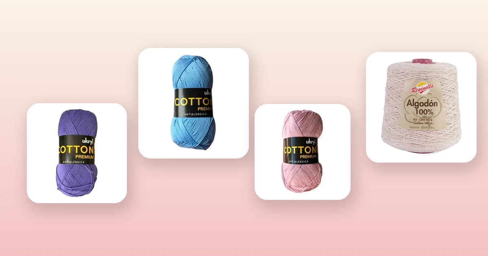

Proyectos de crochet
Cómo tejer un mandala a crochet paso a paso
Los mandalas a crochet son círculos decorativos tejidos con múltiples colores que quedan espectaculares en la pared. En esta guía te enseñamos 3 diseños — mandala clásico de abanicos, mandala de flor de loto y mandala sunburst —, qué hilo usar, cómo elegir los colores y cómo montarlo para decorar tu hogar.

Qué es un mandala a crochet
Un mandala es un diseño circular y simétrico que se teje desde el centro hacia afuera, ronda por ronda, cambiando de colores y puntos para crear un patrón concéntrico. Viene de la tradición artística oriental, donde los mandalas representan armonía y equilibrio, pero en crochet se han convertido en uno de los proyectos decorativos más populares del mundo.
Lo que hace especial al mandala a crochet es que combina la técnica del tejido circular (la misma que se usa para el granny square) con una libertad creativa total: puedes elegir tus colores favoritos, mezclar puntos básicos con puntos texturados y decidir el tamaño que quieras. El resultado es una pieza única que funciona como arte textil para la pared, centro de mesa o incluso como base para un almohadón.
Si dominas los puntos básicos de crochet — cadena, punto bajo, punto alto y punto deslizado — puedes tejer un mandala. No necesitas experiencia avanzada; solo paciencia para seguir las rondas y ganas de experimentar con colores.
Materiales y qué hilo usar
Para un mandala decorativo necesitas un hilo con buena definición de puntos y colores vibrantes. El hilo de algodón 100% es la mejor opción porque no tiene pelusa (como la lana), los puntos se ven nítidos y el mandala mantiene su forma sin deformarse con el tiempo.
- Ganchillo de 3 a 3,5 mm. Un ganchillo fino da puntos más definidos y un mandala más compacto. Si prefieres un mandala más suelto y grande, usa 4 mm. Si no sabes cuál usar, consulta la guía de qué aguja o ganchillo usar.
- 3 a 6 ovillos de hilo de algodón en colores diferentes. Para un mandala de 30-35 cm necesitas unos 150-200 g en total.
- Aguja lanera para esconder las hebras de los cambios de color.
- Tijeras.
- Aro de bordado o aro de madera para montar el mandala terminado (opcional pero recomendado).
- Alfileres de bloqueo para fijar el mandala mientras se seca (opcional).
Los mejores hilos para mandalas de nuestra tienda:
- Hilo de Algodón Lila: un tono místico perfecto para el centro o los anillos intermedios del mandala. 100 g y 200 m.
- Hilo de Algodón Celeste: fresco y luminoso, ideal como color de contraste. 100 g y 200 m.
- Hilo de Algodón Palo Rosa: suave y cálido, combina hermoso con lila y celeste para una paleta armónica. 100 g y 200 m.
- Cono de Algodón Crudo: el color natural del algodón, perfecto como base neutra entre los anillos de color. 500 g y 1.690 m — te alcanza para muchos mandalas.
Cómo elegir la paleta de colores
La paleta de colores es lo que hace que un mandala pase de "bonito" a "espectacular". No necesitas ser diseñador; sigue estas reglas simples:
- Paleta análoga (la más fácil): elige 3 colores que estén juntos en el círculo cromático. Ejemplo: celeste + lila + palo rosa. Son colores que combinan naturalmente y dan un resultado suave y elegante.
- Paleta con neutro: usa 2-3 colores vivos alternados con un neutro como crudo, blanco o arena. El neutro actúa como "respiro" visual entre los anillos de color y hace que los colores se vean más intensos por contraste.
- Paleta contrastante: elige colores opuestos en el círculo cromático: celeste + naranja, lila + mostaza. Da un mandala vibrante y llamativo, ideal para paredes blancas o neutras.
- Paleta monocromática: usa distintos tonos de un mismo color (celeste + azul rey + azul marino) más un blanco. El resultado es sofisticado y moderno.
Un truco infalible: empieza con el color más oscuro o intenso en el centro y ve hacia colores más claros en las rondas exteriores. Esto crea un efecto visual de "expansión" que es muy atractivo.
Cómo tejer el centro: anillo mágico
Todo mandala comienza con un anillo mágico (también llamado anillo ajustable). Es la base que permite cerrar el centro sin dejar un hueco visible:
- Enrolla el hilo alrededor de dos dedos formando un aro.
- Inserta el ganchillo en el aro, toma el hilo y sácalo (1 lazada en el ganchillo).
- Haz una cadena (esto no cuenta como punto).
- Teje 12 puntos altos dentro del aro. Este es el número estándar para mandalas porque 12 es divisible por 2, 3, 4 y 6, lo que facilita los patrones simétricos.
- Tira del extremo del hilo para cerrar el aro.
- Une con un punto deslizado al primer punto alto.
Ya tienes la ronda 1 con 12 puntos altos. Desde aquí, cada diseño toma un camino diferente.
Diseño 1: mandala clásico de abanicos
Este diseño alterna rondas de abanicos (grupos de puntos altos) con rondas de separación. Es el más popular porque es fácil de memorizar y queda muy decorativo. Usa 4 colores: A (centro), B, C y D.
Ronda 1 (color A): anillo mágico + 12 puntos altos. Cierra con punto deslizado. (12 pa)
Ronda 2 (color A): cadena 3 (cuenta como 1 pa), 1 pa en el mismo punto. *2 pa en cada punto.* Cierra. (24 pa)
Ronda 3 (color B): cadena 1, 1 pb en el mismo punto. *Salta 1, 5 pa en el siguiente punto (abanico), salta 1, 1 pb.* Repite 5 veces más. Cierra. (6 abanicos)
Ronda 4 (color B): cadena 3, 2 pa en el mismo punto. *1 pb en el punto central del abanico anterior (el 3er pa), 5 pa en el pb.* Repite. Termina con 1 pb en el 3er pa del último abanico, 2 pa en el pb inicial. Cierra. (6 abanicos desplazados)
Ronda 5 (color C): cadena 1. *1 pb en el punto central del abanico, cadena 3, 1 pb en el pb entre abanicos, cadena 3.* Repite. Cierra. (12 arcos de cadena 3)
Ronda 6 (color C): punto deslizado hasta el primer arco. *En el arco: 1 pb, 3 pa, 1 pb. En el siguiente arco: 1 pb, 3 pa, 1 pb.* Repite. Cierra. (12 conchas pequeñas)
Ronda 7 (color D): cadena 1. *1 pb entre 2 conchas, 5 pa en el pb central de la concha.* Repite. Cierra. (12 abanicos — el mandala está creciendo)
Rondas 8-12: continúa alternando rondas de abanicos con rondas de separación (pb y cadenas). Cada 2 rondas, cambia de color. Agrega 12 puntos de aumento por ronda para mantener el mandala plano.
Con 12 rondas obtienes un mandala de unos 22-25 cm. Para llegar a 35 cm, continúa hasta la ronda 18-20. El patrón se repite: una ronda de textura (abanicos, conchas) y una ronda de separación (arcos de cadenas).
Diseño 2: mandala flor de loto
Este diseño crea pétalos que se superponen como una flor de loto. El efecto 3D es impresionante y se logra tejiendo en el frente de la ronda anterior. Usa 3 colores: A (centro), B (pétalos) y C (fondo).
Ronda 1 (color A): anillo mágico + 12 pa. Cierra. (12 pa)
Ronda 2 (color A): cadena 3. *2 pa en cada punto.* Cierra. (24 pa)
Ronda 3 (color C - fondo): cadena 1. *1 pb, cadena 3, salta 2.* Repite. Cierra. (8 arcos)
Ronda 4 (color B - pétalos): trabaja en los puntos de la ronda 2 (por detrás de la ronda 3). Punto deslizado hasta el primer punto saltado. *1 pb en el punto saltado, cadena 5, salta 2.* Repite alrededor. Cierra. (8 arcos largos por detrás)
Ronda 5 (color B): en cada arco de cadena 5: 1 pb, 1 media vareta, 3 pa, 1 media vareta, 1 pb. Estos son los pétalos de loto. Cierra. (8 pétalos)
Ronda 6 (color C): trabaja por detrás de los pétalos, en los pb de la ronda 4. *1 pb, cadena 5.* Repite. Cierra.
Ronda 7 (color B): en cada arco: 1 pb, 1 mv, 5 pa, 1 mv, 1 pb. Pétalos más grandes que crecen sobre los anteriores. Cierra. (8 pétalos grandes)
Continúa alternando rondas de fondo y pétalos. Cada capa de pétalos es un poco más grande que la anterior, creando el efecto de loto abierto. Cambia el color B por otro tono cada 2 capas de pétalos para variar.
Diseño 3: mandala sunburst
El sunburst (rayo de sol) es un mandala con líneas que irradian desde el centro, creando un efecto de energía y movimiento. Usa puntos altos triples para crear las líneas largas. Usa 3-4 colores alternados.
Ronda 1 (color A): anillo mágico + 12 pa. Cierra.
Ronda 2 (color A): cadena 3, 1 pa en el mismo punto. *2 pa en cada punto.* Cierra. (24 pa)
Ronda 3 (color B): cadena 3. *1 pa en el siguiente, 2 pa en el siguiente.* Repite. Cierra. (36 pa)
Ronda 4 (color B): cadena 1. *1 pb, cadena 2, salta 2.* Repite. Cierra. (12 espacios)
Ronda 5 (color C): cadena 4 (cuenta como 1 punto alto triple). *En el espacio de cadena 2: 2 puntos altos triples. 1 pat en el pb.* Repite. Cierra. Los puntos altos triples son las líneas que irradian. (36 pat)
Ronda 6 (color A): cadena 1. *1 pb en cada pat.* Cierra. (36 pb — ronda de descanso)
Ronda 7 (color D): cadena 3. *1 pa, 2 pa en el siguiente, 1 pa.* Repite. Cierra. (48 pa — ronda de aumento)
Ronda 8 (color D): cadena 1. *1 pb, cadena 3, salta 3.* Repite. Cierra. (12 espacios grandes)
Ronda 9 (color C): en cada espacio de cadena 3: 3 puntos altos triples. *1 pb entre espacios.* Repite. (36 pat — otra vuelta de rayos)
Continúa alternando rondas de "rayos" (puntos altos triples en espacios) con rondas de aumento. Los rayos crecen en cada repetición y el mandala parece un sol radiante.
Bloqueo: cómo dejarlo plano
El bloqueo es indispensable para que el mandala quede perfectamente plano y circular. Sin bloqueo, los bordes tienden a ondular y el mandala no se ve bien montado.
- Esconde todas las hebras con aguja lanera antes de bloquear. Pasa cada hebra por dentro del tejido durante al menos 5 cm en zigzag y corta el exceso.
- Moja el mandala en agua tibia con una gota de jabón neutro durante 15 minutos. El algodón absorbe el agua y se vuelve maleable.
- Escurre suavemente sin retorcer. Envuelve en una toalla y presiona para quitar el exceso.
- Estira sobre una superficie acolchada (una colchoneta de yoga, un trozo de foam o la alfombra cubierta con un plástico).
- Fija con alfileres empezando por el centro (1 alfiler) y luego los 4 puntos cardinales del borde. Después agrega alfileres cada 3-4 cm alrededor del borde, estirando para que quede circular y uniforme.
- Deja secar completamente — mínimo 12 horas. No lo muevas hasta que esté totalmente seco.
Si quieres un mandala más firme (ideal para pared), agrega almidón: disuelve 1 cucharada de maicena en medio litro de agua tibia, sumerge el mandala y bloquea. El almidón endurece el tejido y hace que mantenga la forma perfectamente.
Para más detalles sobre el cuidado de piezas de algodón, revisa la guía de cómo lavar y cuidar la lana.
Cómo montar y colgar tu mandala
Una vez bloqueado, tu mandala está listo para montar. La opción más popular es el aro de bordado, pero hay varias alternativas:
- Aro de bordado: elige un aro 2-3 cm más pequeño que el mandala. Abre el aro, coloca el mandala centrado, cierra y ajusta la tensión. Corta el exceso de tela del borde o dóblalo hacia atrás y cóselo. El aro se cuelga directamente o con un hilo en la parte superior.
- Bastidor de lienzo: estira el mandala sobre un bastidor cuadrado o circular y fíjalo con grapas o pegamento textil por detrás. El fondo blanco del lienzo hace que los colores destaquen.
- Aro de madera o metal: pasa un lazo de cadenas por el borde del mandala y une al aro. El mandala queda colgando dentro del aro con un espacio entre ambos. Puedes agregar flecos o borlas en la parte inferior para un estilo boho.
- Directo a la pared: fija el mandala con alfileres decorativos o clavos pequeños directamente sobre la pared. Ideal para mandalas grandes o composiciones con varios mandalas de distintos tamaños.
Ideas de uso y decoración
Los mandalas a crochet van mucho más allá de la pared. Algunas ideas para usar tus mandalas:
- Composición de pared: agrupa 3 a 5 mandalas de distintos tamaños y colores coordinados en una pared. Juega con las alturas para un efecto galería.
- Centro de mesa: un mandala grande (40+ cm) en algodón crudo queda hermoso como centro de mesa. Agrega un jarrón o vela encima.
- Almohadón mandala: teje dos mandalas iguales, únelos por el borde con punto bajo y rellena con guata o un cojín. Un almohadón redondo y único.
- Atrapasueños: monta un mandala pequeño (15-20 cm) en un aro y agrega cintas, plumas o borlas colgando. Perfecto para un dormitorio.
- Bolso circular: dos mandalas iguales unidos por un fuelle tejido con presillas para las asas. Es un proyecto más avanzado pero el resultado es un bolso artesanal espectacular.
- Reloj de pared: monta un mandala en un aro y agrega un mecanismo de reloj por detrás. Las rondas del mandala hacen de marcas de horas.
Errores comunes y soluciones
- El mandala se curva como un bowl. Te faltan aumentos. En un mandala plano, cada ronda debe tener la misma cantidad de aumentos que puntos tiene la ronda 1 (12 si empezaste con 12 pa). Si se curvó, bloquea húmedo estirando con alfileres.
- El mandala ondula en los bordes. Tienes demasiados aumentos. Reduce la cantidad de puntos de aumento en las rondas exteriores. Un bloqueo firme con almidón ayuda a controlar la ondulación.
- Los cambios de color se notan mucho. Haz el último lazo del último punto de la ronda con el color nuevo. Además, empieza cada ronda nueva en el mismo punto (no avances con punto deslizado) para que la línea de unión quede prolija.
- Las hebras escondidas se ven. En mandalas, las hebras se ven más que en prendas porque el mandala se exhibe a la vista. Pasa cada hebra por dentro de los puntos del mismo color, nunca sobre puntos de otro color. Usa aguja lanera fina y zigzaguea para que no se suelte.
- El mandala no queda circular. Probablemente estás empezando cada ronda en el mismo lugar, creando una línea de unión recta que distorsiona la forma. Intenta la técnica de rondas continuas (sin cerrar con punto deslizado) para los diseños que lo permitan, o varía el punto de inicio.